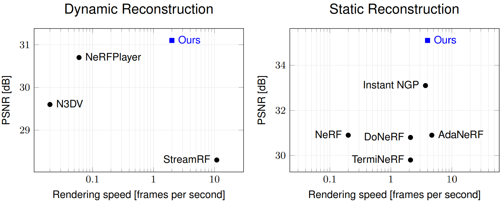

Paper (arXiv)
Paper (arXiv)
 Supplemental Results
Supplemental Results
 Code
Code
Dynamic 6-DoF rendering of scenes from Google Immersive, Technicolor, and Neural 3D Video datasets.
Static 6-DoF rendering of highly view-dependent scenes from Shiny and Stanford datasets.
Speed-quality trade-off of our method compared to the state of the art.
Volumetric scene representations enable photorealistic view synthesis for static scenes and form the basis of several existing 6-DoF video techniques. However, the volume rendering procedures that drive these representations necessitate careful trade-offs in terms of quality, rendering speed, and memory efficiency. In particular, existing methods fail to simultaneously achieve real-time performance, small memory footprint, and high-quality rendering for challenging real-world scenes. To address these issues, we present HyperReel — a novel 6-DoF video representation. The two core components of HyperReel are: (1) a ray-conditioned sample prediction network that enables high-fidelity, high frame rate rendering at high resolutions and (2) a compact and memory-efficient dynamic volume representation. Our 6-DoF video pipeline achieves the best performance compared to prior and contemporary approaches in terms of visual quality with small memory requirements, while also rendering at up to 18 frames-per-second at megapixel resolution without any custom CUDA code.
Volumetric scene representations such as neural radiance fields [Mildenhall et al. 2020] and instant neural graphics primitives [Müller et al. 2022] have recently made
great strides towards photorealistic view synthesis for static scenes.
While several recent works build dynamic view syntheisis pipelines on top of these volumetric representations,
it remains a challenging task to create a 6-DoF video format that can achieve high quality, fast rendering, and a small memory footprint.
We present HyperReel, a novel representation for 6-Degree-of-Freedom Video that achieves state-of-the-art quality
while being memory efficient and real-time renderable at high-resolution. The two core components of HyperReel are:


We show real-time demos of our approach at 512x512 pixel resolution applied to both dynamic and highly-view-dependent static scenes below.
@unpublished{attal2023hyperreel,
author = {Benjamin Attal and Jia-Bin Huang and Christian Richardt and Michael Zollhoefer and Johannes Kopf and Matthew O'Toole and Changil Kim},
title = {{HyperReel}: {H}igh-Fidelity {6-DoF} Video with Ray-Conditioned Sampling},
year = {2023},
note = {arXiv:2301.XXXXX}
}